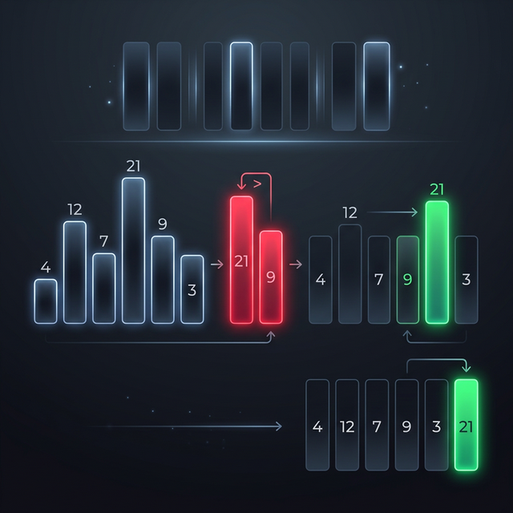

Bubble Sort
Bubble Sort is one of the simplest sorting algorithms. It works by repeatedly stepping through the list, comparing adjacent elements, and swapping them if they are in the wrong order. The pass through the list is repeated until the list is sorted.
It gets its name because smaller elements "bubble" to the top of the list while larger elements sink to the bottom (like bubbles in a glass of soda).

Complexity
| Best Time | Average Time | Worst Time | Space |
|---|---|---|---|
| O(N) | O(N²) | O(N²) | O(1) |
How It Works (Step-by-Step)
- Start at the beginning of the array.
- Compare the first two elements. If the first is greater than the second, swap them.
- Move to the next pair of elements, compare, and swap if necessary.
- Continue this process until reaching the end of the array. At this point, the largest element is guaranteed to be at the very end.
- Repeat steps 1-4 for the remaining unsorted elements (ignoring the sorted end of the array) until no more swaps are needed.